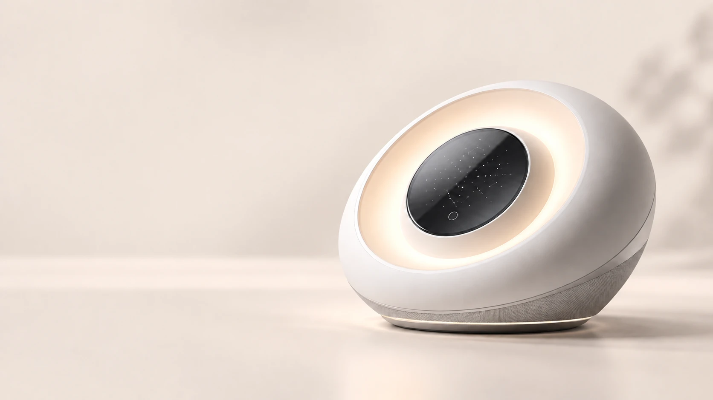
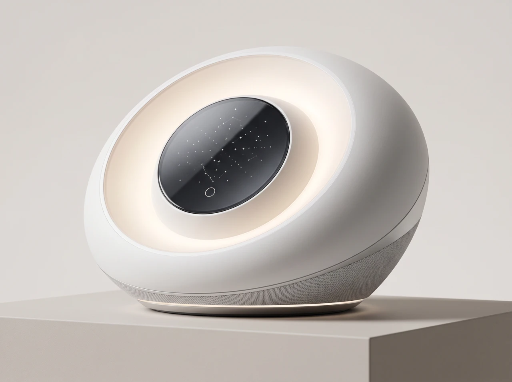
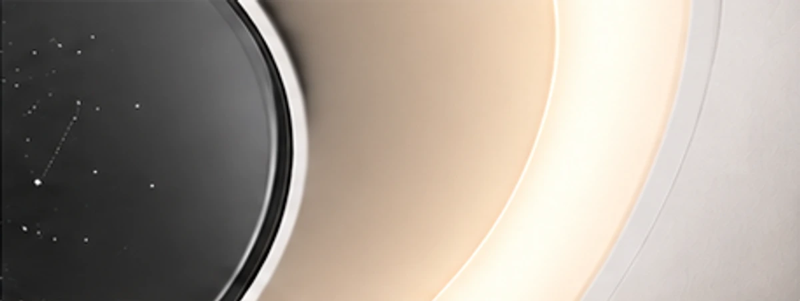
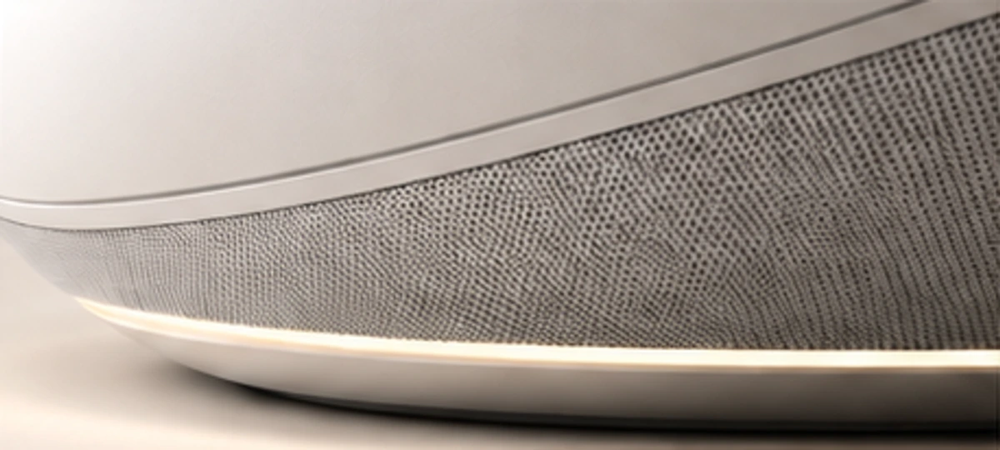
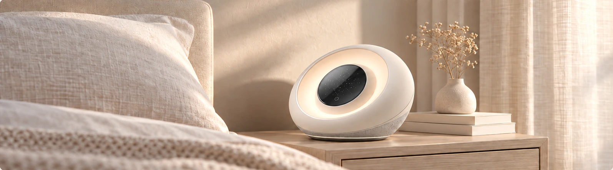
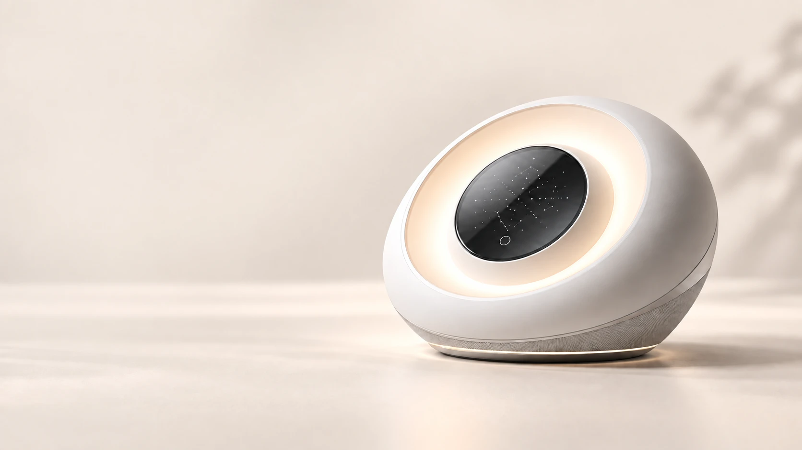

White noise + wake-up light
A gentler
way to wake.
Warm light. Soothing sound.
A little more ease, morning and night.
Made for the in-between moments
The last light of the evening.
The first light of your day.
A softer space for both.
A white noise companion and a wake-up light in one sculpted form. Designed to belong at your bedside, and to make light and sound part of your everyday rhythm.

One form. Light & sound.A circle
of calm.
A warm halo. A quiet presence. A gently tilted face that feels at home beside you.
Light that sets the mood
A luminous ring surrounds the dark central panel, bringing a warm glow to your bedside.
Sound for your downtime
White noise gives your evening a steady soundscape, alongside the light.
Softly sculpted
A rounded ivory shell meets a woven lower surface. Thoughtful from every angle.
A closer look.
Light in motion
Slow down.
Start softly.
It’s the little things
that make the feeling.

The warm embrace
Light follows the circular face, framed by an ivory curve and a deep, glossy centre.

A softer texture
A fine woven surface gives the lower body a tactile contrast to the smooth shell.
At home
in your rhythm.
Keep a little space for yourself.
Before the day begins, and after it ends.

Ease into the evening
A warm bedside glow and a quiet moment to leave the day behind.
Welcome the morning
Light and sound make space for a gentler beginning.
Make room for you
A simple daily companion for reading, resting, and time of your own.
A few
quiet answers.
Get to know the light.
What is the Wake-Up Light?
A bedside product that brings white noise and wake-up lighting together in one rounded design. Its illuminated ring, dark central panel, and woven lower housing give it a distinctive presence.
How does it fit into my day?
Think of it as a companion for the moments around sleep: winding down in the evening, beginning your morning, or making your bedside feel more inviting.
What can I see in the film?
The 15-second film shows the product’s shape, ring light, woven surface, and different viewing angles. Open the player to pause, replay, or view it full screen.
Where can I explore the design?
The product gallery shows the front, side, base, and three-quarter views. The detail photographs take you closer to the illuminated ring and woven surface.

A softer start.
A calmer close.
Let light and sound find their place in your day.